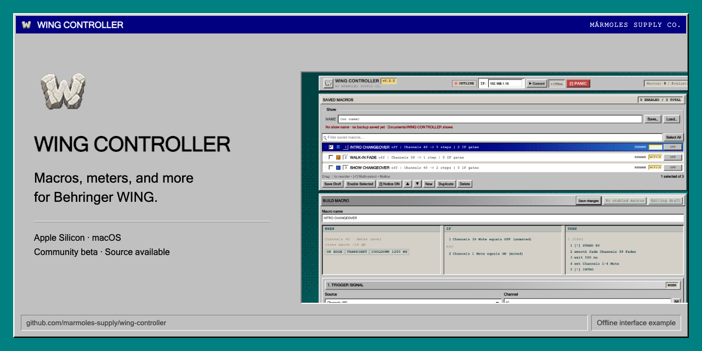
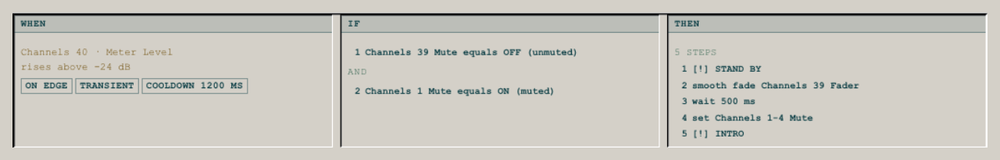
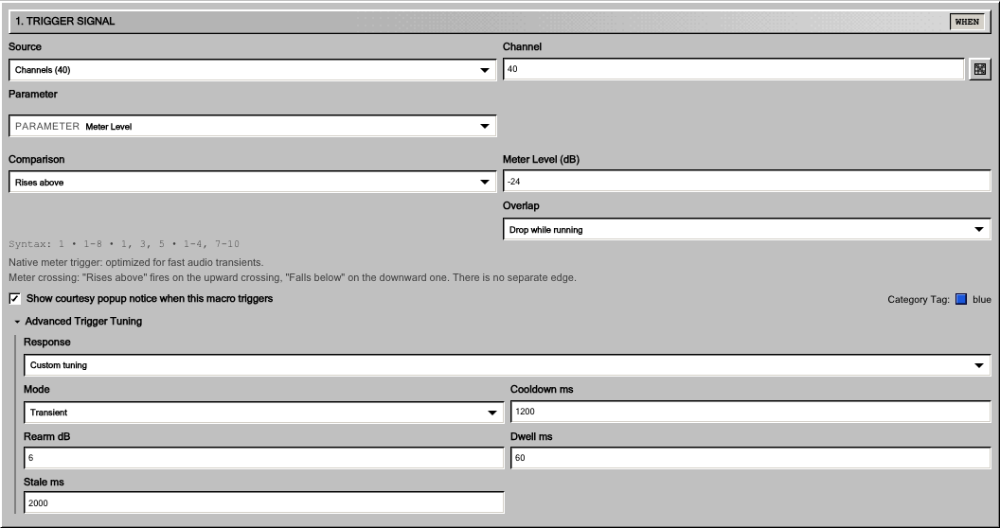
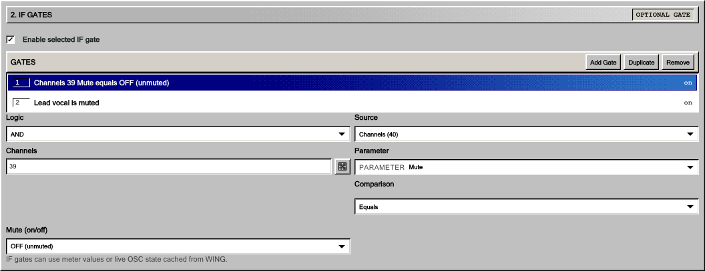
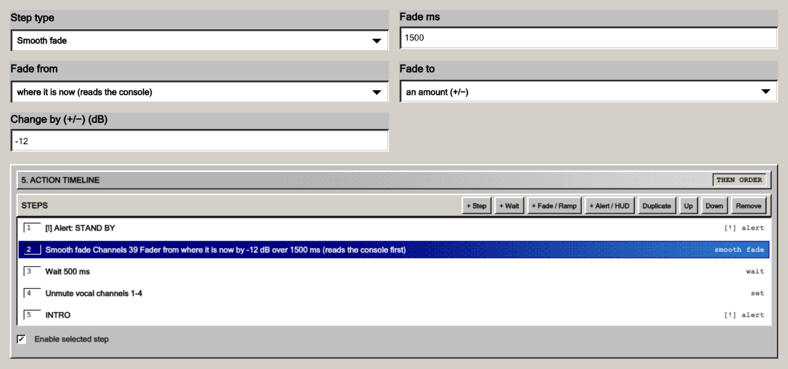
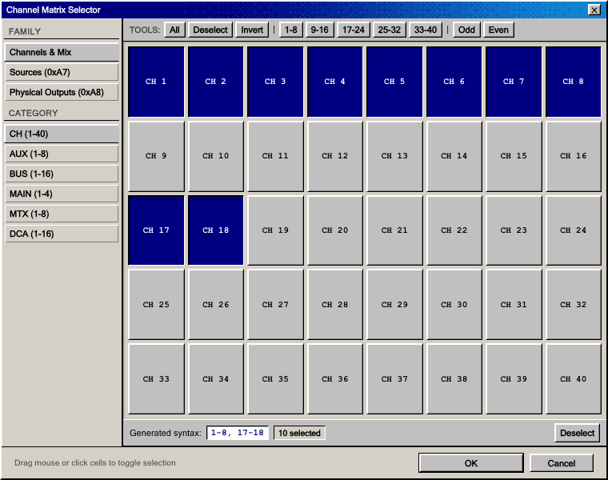
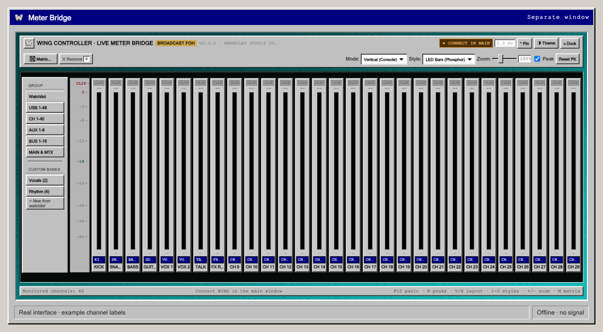
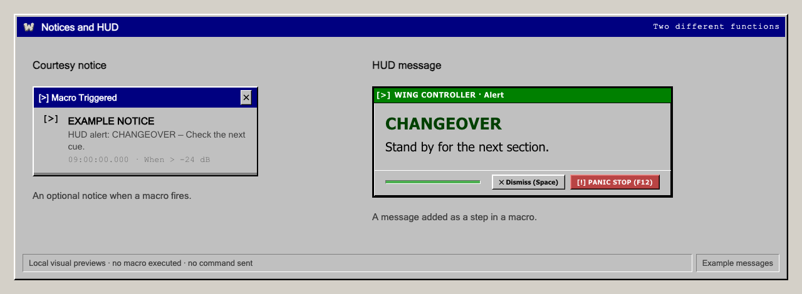

WING CONTROLLER — macros, meters, and more for Behringer WING

Build macros from audio thresholds, console state, inter-app MIDI/OSC or LTC/MTC timecode cues. Add conditions and timed actions, keep meters in their own window, and display messages for the operator.
Crea macros a partir de niveles de audio, estados de la consola, MIDI/OSC entre aplicaciones o cues LTC/MTC. Añade condiciones y acciones con tiempos, abre los medidores en otra ventana y muestra mensajes al operador.
MacrosMacros
Combine a WHEN, optional IF conditions, and an ordered THEN sequence. This inactive example includes two gates, messages, a relative smooth fade, a wait and a multi-channel action.
Combina un WHEN, condiciones IF opcionales y una secuencia THEN. Este ejemplo inactivo incluye dos condiciones, mensajes, un smooth fade relativo, una espera y una acción sobre varios canales.


- WHEN
- Meter levels or typed console-state comparisons. MIDI/OSC bindings and timecode cues provide other firing routes.
- Niveles de medidores o comparaciones de estado. Las asignaciones MIDI/OSC y los cues ofrecen otras rutas de disparo.
- IF
- Up to 16 gates with AND or OR, evaluated when a meter or console-state trigger arrives.
- Hasta 16 condiciones con AND u OR, evaluadas al llegar un disparador por medidor o estado de consola.
- THEN
- Up to 32 sequential steps: Set, Toggle, Wait, Wait then Set, Fade, Smooth Fade, HUD, Send MIDI and Send OSC. Modes depend on the target.
- Hasta 32 pasos: Set, Toggle, Wait, Wait then Set, Fade, Smooth Fade, HUD, Send MIDI y Send OSC. Los modos dependen del destino.
- DetailDetalle
- Current or authored fade starts, absolute or relative ends, trigger tuning, and Drop / Queue one / Restart behaviour.
- Fades desde el valor actual o uno elegido, finales absolutos o relativos, ajustes del disparador y políticas Drop / Queue one / Restart.
Open the trigger, IF and action editor detailsVer los detalles del disparador, los IF y las acciones
Trigger tuningAjustes del disparador

Rearm and dwell apply to rising transients; other paths use crossing and cooldown rules.
Rearm y dwell se aplican al transitorio ascendente; las otras rutas usan cruce y cooldown.
IF conditionsCondiciones IF

One AND or OR list, rather than nested branches. Gates are checked at the meter/state trigger, not continuously through the timeline.
Una lista con AND u OR, sin ramas anidadas. Se comprueba al llegar el disparador, no continuamente durante la secuencia.
Action settings and timelineValores y secuencia de acciones

Control excerpts are arranged for readability. The example reads the current fader, reduces it by 12 dB over 1,500 ms, then continues through a wait and later steps. These channel roles are fictional; this is not a tested show preset.
Los recortes se han compuesto para facilitar su lectura. El ejemplo lee el fader actual, lo reduce 12 dB en 1.500 ms y continúa con una espera y otros pasos. Los roles de canales son ficticios; no es un preset de show probado.
Actions and timing guideGuía de acciones y tiempos, en inglés
Channel selectionSelección de canales
Select supported channels and groups visually, with bank tools and generated ID ranges for action targets and meter views. The trigger grid selects one channel; its text field also supports lists and ranges.
Selecciona canales y grupos compatibles con herramientas por bancos y rangos para destinos y medidores. La cuadrícula del disparador selecciona un canal; el campo escrito admite listas y rangos.


Meter Bridge
A separate window for meters, with named banks, layouts, size controls and visual styles. Keep it beside the editor or on another display.
Una ventana independiente de medidores con bancos, distribuciones, tamaños y estilos visuales. Puedes dejarla junto al editor o en otra pantalla.


Availability depends on the console/source. The analogue VU option is a visual style, not calibrated VU ballistics.
La disponibilidad depende de la consola y la fuente. El estilo VU analógico no implica balística VU calibrada.
Notices and HUDNotices y HUD
An optional courtesy notice reports macro activity. A HUD message is a separate macro action: a centred card, corner notice or full-screen message, with optional sound.
El courtesy notice opcional informa de la actividad de una macro. El HUD es una acción independiente: mensaje centrado, en una esquina o a pantalla completa, con sonido opcional.


ThemesTemas

All screenshots use the real interface, rendered offline with example configurations. No console is connected, no macro is executed and no meter signal is simulated.
Las capturas muestran la interfaz real con configuraciones de ejemplo, sin consola conectada, ejecución de macros ni señal simulada.
Install on your MacInstalar en tu Mac
- Download the DMG.Descarga el DMG.
Use the v0.3.0 release and compare its checksum with SHA256SUMS.txt.
Utiliza la release v0.3.0 y compara el checksum con SHA256SUMS.txt.
- Copy to Applications.Copia a Aplicaciones.
Open the DMG and drag WING CONTROLLER.app into Applications.
Abre el DMG y arrastra WING CONTROLLER.app a Aplicaciones.
- Eject and open.Expulsa y abre.
Launch the installed copy. For macOS approval, follow the app-specific first-launch guide.
Abre la copia instalada. Para autorizarla en macOS, sigue la guía de primera apertura.
Apple Silicon / M-series Macs only. No developer tools needed. Intel, Windows and Linux installers are not supported; a wider macOS runtime range is unverified.
Solo Mac Apple Silicon / serie M. No necesitas herramientas de desarrollo. No hay instalador compatible con Intel, Windows o Linux; el rango amplio de versiones de macOS no está validado.
Community testing and contributionsPruebas y contribuciones
Help test the beta, share what worked and what did not, or improve the source and documentation. English and Spanish reports are welcome. You do not need to write code.
Ayuda a probar la beta, cuenta qué ha funcionado y qué no, o mejora el código y la documentación. Puedes escribir en español o inglés. No hace falta programar.
Reports are public and need a GitHub account. Remove private data. A result applies to the version/setup tested, not every system. Testing priorities and how reports are reviewed.
Los informes son públicos y requieren cuenta de GitHub. Elimina datos privados. Cada resultado corresponde a su versión y equipo. Prioridades y gestión de informes, en inglés.